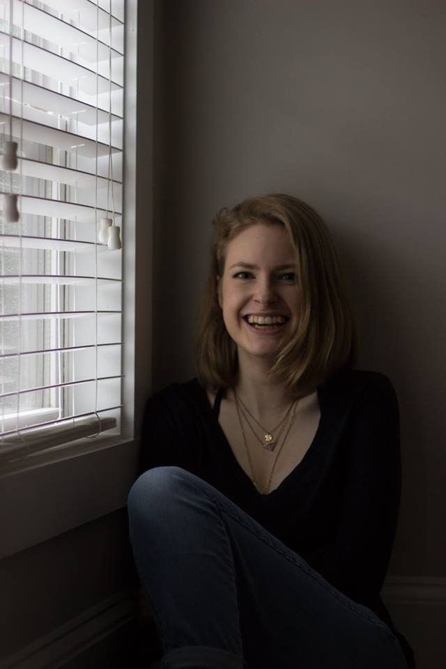

Random Facts about Me:
- I am an Accounting and International Business co-major.
- I am also a Korean minor, so I can speak and write in Korean relatively well.
- My favorite colors are purple and black.
- My favorite shade of green is seafoam.
- I have written a fantasy novel, and I am currently working on getting it published.
- My favorite Disney character is Ursula from The Little Mermaid, and my favorite Disney movie is Oliver and Company
- Sing Street, an Irish independent film from 2016 is my favorite movie of all time. 10/10 recommend, and last I heard, it is still available on Netflix.
- I played oboe in middle school, and I also played soccer for 10 years.
- Whenever I'm going through a rough time, I watch Barbie movies because they remind me of my childhood, when everything was easier.
- My Excel sheet for my budget is 20 sheets long and incredibly thorough, so despite being a college student, I somehow have my finances in check.
- I'm very moody and honestly kind of annoying because I demand attention from my friends (oops).
- Corgis are the best animals to ever exist, and you can't convince me otherwise.
- Memes are love. Memes are life.
- My favorite animal is the peacock. I used to have actual peacock feathers in my room, and I currenty own a peacock pattern skirt.
**Source: My dear friend, Emily Woodward took this picture. There is not a link.